auxjad.Drifter¶
-
class
auxjad.Drifter(contents_out: abjad.core.Container.Container, contents_in: abjad.core.Container.Container, *, fade_in_first: bool = False, fade_out_last: bool = False, initial_repetitions: int = 1, final_repetitions: int = 1, repetition_chance: float = 0.0, weighted_duration: bool = False, disable_rewrite_meter: bool = False, omit_time_signatures: bool = False, use_multimeasure_rests: bool = True, boundary_depth: Optional[int] = None, maximum_dot_count: Optional[int] = None, rewrite_tuplets: bool = True)¶ Driftertakes twoabjad.Container’s and gradually drifts from one into the other, by fading out the first while fading in the second. It makes uses ofauxjad.Faderfor that.- Example:
Calling the object will return a tuple of two
abjad.Selection’s generated by the fading process. Each call of the object will apply the fading process to one of the two containers of the previous results. That is, either a logical tie ofcontainer_outis removed or a logical tie ofcontainer_inis added.>>> container_out = abjad.Container(r"fs'4 g'2 bf'4") >>> container_in = abjad.Container(r"\times 4/5 {cs''4 d''1}") >>> adrifter = auxjad.Drifter(container_out, container_in) >>> selection_a, selection_b = adrifter() >>> score = abjad.Score([ ... abjad.Staff(selection_a), ... abjad.Staff(selection_b), ... ]) >>> abjad.f(score) \new Score << \new Staff { \time 4/4 fs'4 g'2 bf'4 } \new Staff { \time 4/4 R1 } >>
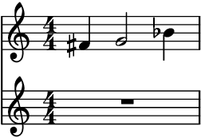>>> selection_a, selection_b = adrifter() >>> score = abjad.Score([ ... abjad.Staff(selection_a), ... abjad.Staff(selection_b), ... ]) >>> abjad.f(score) \new Score << \new Staff { \time 4/4 fs'4 g'2 bf'4 } \new Staff { \times 4/5 { \time 4/4 r4 d''1 } } >>
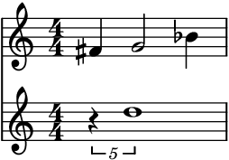>>> selection_a, selection_b = adrifter() >>> score = abjad.Score([ ... abjad.Staff(selection_a), ... abjad.Staff(selection_b), ... ]) >>> abjad.f(score) \new Score << \new Staff { \time 4/4 fs'4 r2 bf'4 } \new Staff { \times 4/5 { \time 4/4 r4 d''1 } } >>

The property
current_windowcan be used to access the current window without moving the head forwards.>>> notes = adrifter.current_window() >>> score = abjad.Score([ ... abjad.Staff(selection_a), ... abjad.Staff(selection_b), ... ]) >>> abjad.f(score) \new Score << \new Staff { \time 4/4 fs'4 r2 bf'4 } \new Staff { \times 4/5 { \time 4/4 r4 d''1 } } >>

- Example:
To run through the whole process and output it as a tuple of two
abjad.Staff’s, use the methodoutput_all().>>> container_out = abjad.Container(r"fs'4 g'2 bf'4") >>> container_in = abjad.Container(r"\times 4/5 {cs''4 d'1}") >>> adrifter = auxjad.Drifter(container_out, container_in) >>> staff_a, staff_b = adrifter.output_all() >>> score = abjad.Score([staff_a, staff_b]) >>> abjad.f(score) \new Score << \new Staff { \time 4/4 fs'4 g'2 bf'4 fs'4 g'2 bf'4 fs'4 r2 bf'4 fs'4 r2 bf'4 r2. bf'4 R1 } \new Staff { \time 4/4 R1 \times 4/5 { cs''4 r1 } \times 4/5 { cs''4 r1 } \times 4/5 { cs''4 d'1 } \times 4/5 { cs''4 d'1 } \times 4/5 { cs''4 d'1 } } >>
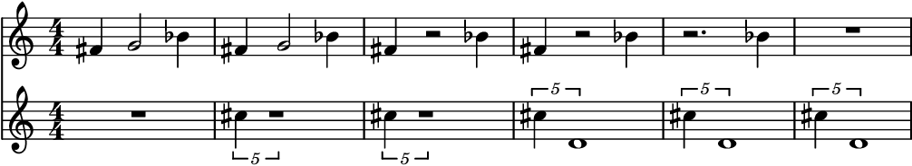- Example:
To run through just part of the process and output it as a tuple of two
abjad.Staff’s, use the methodoutput_n()and pass the number of iterations as argument.>>> container_out = abjad.Container(r"e'8 fs'4. r2") >>> container_in = abjad.Container(r"c''2 ~ c''8 d''4.") >>> adrifter = auxjad.Drifter(container_out, container_in) >>> staff_a, staff_b = adrifter.output_n(3) >>> score = abjad.Score([staff_a, staff_b]) >>> abjad.f(score) \new Score << \new Staff { \time 4/4 e'8 fs'4. r2 e'8 fs'4. r2 e'8 r2.. } \new Staff { \time 4/4 R1 c''2 ~ c''8 r4. c''2 ~ c''8 r4. } >>
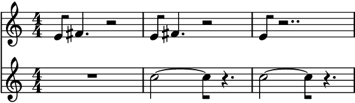- Example:
The instances of
Driftercan also be used as an iterator, which can then be used in a for loop to run through the whole process. Note that unlike the methodsoutput_n()andoutput_all(), time signatures are added to each window returned by the adrifter. Use the functionauxjad.remove_repeated_time_signatures()to clean the output when usingDrifterin this way.>>> container_out = abjad.Container(r"e'8 fs'4. r2") >>> container_in = abjad.Container(r"c''2 ~ c''8 d''4.") >>> adrifter = auxjad.Drifter(container_out, container_in) >>> staff_a = abjad.Staff() >>> staff_b = abjad.Staff() >>> for selection_a, selection_b in adrifter: ... staff_a.extend(selection_a) ... staff_b.extend(selection_b) >>> auxjad.remove_repeated_time_signatures(staff_a) >>> auxjad.remove_repeated_time_signatures(staff_b) >>> score = abjad.Score([staff_a, staff_b]) >>> abjad.f(score) \new Score << \new Staff { \time 4/4 e'8 fs'4. r2 e'8 fs'4. r2 e'8 r2.. e'8 r2.. R1 } \new Staff { \time 4/4 R1 c''2 ~ c''8 r4. c''2 ~ c''8 r4. c''2 ~ c''8 d''4. c''2 ~ c''8 d''4. } >>

- Example:
This class can take many optional keyword arguments during its creation. Setting
fade_in_firsttoTruewill ensure that a logical tie fromcontainer_inmust be faded in before any logical ties ofcontainer_outare removed (defaultFalse). Settingfade_out_lasttoTruewill ensure that all logical ties fromcontainer_inmust be faded in before the very last logical tie ofcontainer_outis removed (defaultFalse). The argumentsinitial_repetitionsandfinal_repetitionsset the number of repetitions of the initial and final measures (default1for both).repetition_chancesets the chance of a measure repeating itself, from0.0to1.0(default is0.0, i.e. no repetitions). Settingweighted_durationtoTruewill give more weight to the larger container (considering both its number of logical ties as well its length), making it more likely that both will fade in and out at a similar rate (default value isFalse).disable_rewrite_meterdisables therewrite_meter()mutation which is applied to the container after every call, andomit_time_signatureswill remove all time signatures from the output (both areFalseby default). By default, the first time signature is attached only to the first leaf of the first call (unless time signature changes require it). Any measure filled with rests will be rewritten using a multi-measure rest; set theuse_multimeasure_reststoFalseto disable this behaviour. The propertiesboundary_depth,maximum_dot_count, andrewrite_tupletsare passed as arguments to abjad’srewrite_meter(), see its documentation for more information.>>> container_out = abjad.Container(r"fs'4 g'2 bf'4") >>> container_in = abjad.Container(r"\times 4/5 {cs''4 d''1}") >>> adrifter = auxjad.Drifter(container_out, ... container_in, ... fade_in_first=True, ... fade_out_last=True, ... initial_repetitions=3, ... final_repetitions=3, ... repetition_chance=0.7, ... weighted_duration=True, ... disable_rewrite_meter=True, ... omit_time_signatures=True, ... use_multimeasure_rests=True, ... boundary_depth=True, ... maximum_dot_count=True, ... rewrite_tuplets=True, ... ) >>> adrifter.fade_in_first True >>> adrifter.fade_out_last True >>> adrifter.initial_repetitions 3 >>> adrifter.final_repetitions 3 >>> adrifter.repetition_chance 0.7 >>> adrifter.weighted_duration True >>> adrifter.disable_rewrite_meter True >>> adrifter.omit_time_signatures True >>> adrifter.use_multimeasure_rests True >>> adrifter.boundary_depth True >>> adrifter.maximum_dot_count True >>> adrifter.rewrite_tuplets True
Use the properties below to change these values after initialisation.
>>> adrifter.fade_in_first = False >>> adrifter.fade_out_last = False >>> adrifter.initial_repetitions = 4 >>> adrifter.final_repetitions = 7 >>> adrifter.repetition_chance = 0.23 >>> adrifter.weighted_duration = False >>> adrifter.disable_rewrite_meter = False >>> adrifter.omit_time_signatures = False >>> adrifter.use_multimeasure_rests = False >>> adrifter.boundary_depth = False >>> adrifter.maximum_dot_count = False >>> adrifter.rewrite_tuplets = False >>> adrifter.fade_in_first False >>> adrifter.fade_out_last False >>> assert adrifter.initial_repetitions 4 >>> assert adrifter.final_repetitions 7 >>> assert adrifter.repetition_chance 0.23 >>> adrifter.weighted_duration False >>> adrifter.disable_rewrite_meter False >>> adrifter.omit_time_signatures False >>> adrifter.use_multimeasure_rests False >>> adrifter.boundary_depth False >>> adrifter.maximum_dot_count False >>> adrifter.rewrite_tuplets False
- Example:
Use the
reset()method to reset the adrifter to its initial state. This can be used to restart the process at any time.>>> container_out = abjad.Container(r"fs'4 g'2 bf'4") >>> container_in = abjad.Container(r"\times 4/5 {cs''4 d'1}") >>> adrifter = auxjad.Drifter(container_out, container_in) >>> staff_a = abjad.Staff() >>> staff_b = abjad.Staff() >>> for _ in range(3): ... selection_a, selection_b = adrifter() ... staff_a.extend(selection_a) ... staff_b.extend(selection_b) >>> adrifter.reset() >>> selection_a, selection_b = adrifter() >>> staff_a.extend(selection_a) >>> staff_b.extend(selection_b) >>> auxjad.remove_repeated_time_signatures(staff_a) >>> auxjad.remove_repeated_time_signatures(staff_b) >>> score = abjad.Score([staff_a, staff_b]) >>> abjad.f(score) \new Score << \new Staff { \time 4/4 fs'4 g'2 bf'4 fs'4 g'2 bf'4 fs'4 r2 bf'4 fs'4 g'2 bf'4 } \new Staff { \time 4/4 R1 \times 4/5 { cs''4 r1 } \times 4/5 { cs''4 r1 } R1 } >>
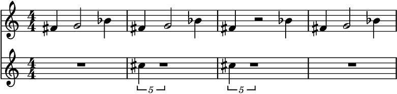- Example:
The function
len()returns the sum of the number of pitched logical ties of bothcontents_inandcontents_out.>>> container_out = abjad.Container(r"c'4 d'4 ~ d'4 r4") >>> container_in = abjad.Container(r"r2 c''2") >>> adrifter = auxjad.Drifter(container_out, container_in) >>> len(adrifter) 3 >>> container_out = abjad.Container(r"fs'4 g'2 bf'4") >>> container_in = abjad.Container(r"\times 4/5 {cs''4 d''1}") >>> adrifter = auxjad.Drifter(container_out, container_in) >>> len(adrifter) 5 >>> container_out = abjad.Container(r"c'4 d'4 ~ d'4 r4") >>> container_in = abjad.Container(r"r2 <c'' e'' g''>2") >>> adrifter = auxjad.Drifter(container_out, container_in) >>> len(adrifter) 3
- Example:
Setting the property
fade_in_firsttoTruewill ensure that a logical tie fromcontainer_inmust be faded in before any logical ties ofcontainer_outare removed (defaultFalse). Settingfade_out_lasttoTruewill ensure that all logical ties fromcontainer_inmust be faded in before the very last logical tie ofcontainer_outis removed (defaultFalse).>>> container_out = abjad.Container(r"\time 3/4 r4 c'4 d'4") >>> container_in = abjad.Container(r"\time 3/4 a''4 g''2") >>> adrifter = auxjad.Drifter(container_out, container_in) >>> staff_a, staff_b = adrifter.output_all() >>> score = abjad.Score([staff_a, staff_b]) >>> abjad.f(score) \new Score << \new Staff { \time 3/4 r4 c'4 d'4 r2 d'4 r2 d'4 R1 * 3/4 R1 * 3/4 } \new Staff { \time 3/4 R1 * 3/4 R1 * 3/4 a''4 r2 a''4 r2 a''4 g''2 } >>
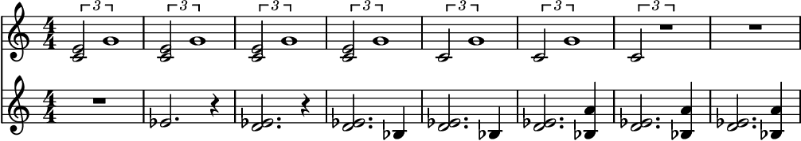>>> adrifter = auxjad.Drifter(container_out, ... container_in, ... fade_out_last=True, ... ) >>> staff_a, staff_b = adrifter.output_all() >>> score = abjad.Score([staff_a, staff_b]) >>> abjad.f(score) \new Score << \new Staff { \time 3/4 r4 c'4 d'4 r2 d'4 r2 d'4 r2 d'4 R1 * 3/4 } \new Staff { \time 3/4 R1 * 3/4 R1 * 3/4 a''4 r2 a''4 g''2 a''4 g''2 } >>
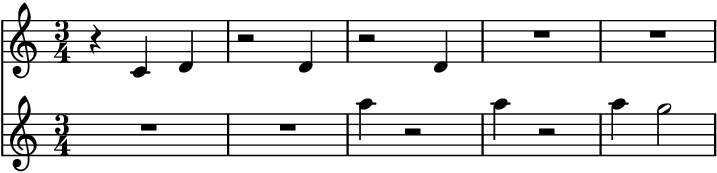>>> adrifter = auxjad.Drifter(container_out, ... container_in, ... fade_in_first=True, ... fade_out_last=True, ... ) >>> staff_a, staff_b = adrifter.output_all() >>> score = abjad.Score([staff_a, staff_b]) >>> abjad.f(score) \new Score << \new Staff { \time 3/4 r4 c'4 d'4 r4 c'4 d'4 r4 c'4 d'4 r2 d'4 R1 * 3/4 } \new Staff { \time 3/4 R1 * 3/4 a''4 r2 a''4 g''2 a''4 g''2 a''4 g''2 } >>
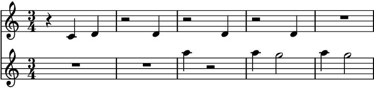- Example:
Setting
weighted_durationtoTruewill give more weight to the larger container (considering both its number of logical ties as well its length), making it more likely that both will fade in and out at a similar rate (default value isFalse).>>> container_out = abjad.Container(r"e'2 c'2") >>> container_in = abjad.Container( ... r"c''8 d''8 e''8 f''8 g''8 a''8 b''8 c'''8") >>> adrifter = auxjad.Drifter(container_out, container_in) >>> staff_a, staff_b = adrifter.output_all() >>> score = abjad.Score([staff_a, staff_b]) >>> abjad.f(score) \new Score << \new Staff { \time 4/4 e'2 c'2 e'2 c'2 r2 c'2 r2 c'2 r2 c'2 R1 R1 R1 R1 R1 R1 } \new Staff { \time 4/4 R1 r4. f''8 r2 r4. f''8 r2 r4. f''8 r8 a''8 r4 r4. f''8 r8 a''8 b''8 r8 r4. f''8 r8 a''8 b''8 r8 r4. f''8 r8 a''8 b''8 c'''8 r4 e''8 f''8 r8 a''8 b''8 c'''8 r8 d''8 e''8 f''8 r8 a''8 b''8 c'''8 c''8 d''8 e''8 f''8 r8 a''8 b''8 c'''8 c''8 d''8 e''8 f''8 g''8 a''8 b''8 c'''8 } >>
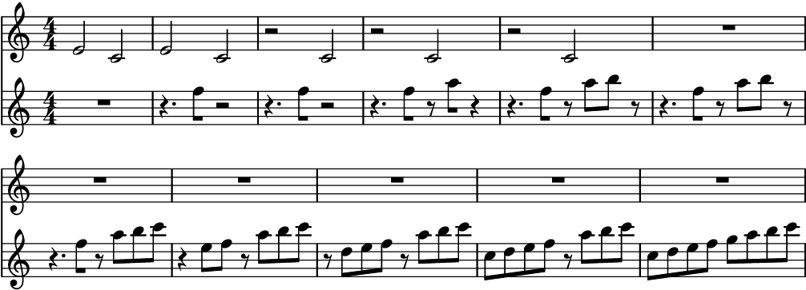>>> adrifter = auxjad.Drifter(container_out, ... container_in, ... weighted_duration=True, ... ) >>> staff_a, staff_b = adrifter.output_all() >>> score = abjad.Score([staff_a, staff_b]) >>> abjad.f(score) \new Score << \new Staff { \time 4/4 e'2 c'2 e'2 c'2 r2 c'2 r2 c'2 r2 c'2 r2 c'2 r2 c'2 r2 c'2 r2 c'2 r2 c'2 R1 } \new Staff { \time 4/4 R1 r4. f''8 r2 r4. f''8 r2 r4. f''8 r8 a''8 r4 r4. f''8 r8 a''8 b''8 r8 r4 e''8 f''8 r8 a''8 b''8 r8 r4 e''8 f''8 g''8 a''8 b''8 r8 c''8 r8 e''8 f''8 g''8 a''8 b''8 r8 c''8 r8 e''8 f''8 g''8 a''8 b''8 c'''8 c''8 d''8 e''8 f''8 g''8 a''8 b''8 c'''8 c''8 d''8 e''8 f''8 g''8 a''8 b''8 c'''8 } >>

- Example:
The properties
initial_repetitionsandfinal_repetitionsset the number of repetitions of the initial and final measures (default is1for both).>>> container_out = abjad.Container(r"a'4 bf'2 r4") >>> container_in = abjad.Container(r"c''2 d''2") >>> adrifter = auxjad.Drifter(container_out, ... container_in, ... initial_repetitions=2, ... final_repetitions=3, ... ) >>> staff_a, staff_b = adrifter.output_all() >>> score = abjad.Score([staff_a, staff_b]) >>> abjad.f(score) \new Score << \new Staff { \time 4/4 a'4 bf'2 r4 a'4 bf'2 r4 r4 bf'2 r4 r4 bf'2 r4 r4 bf'2 r4 R1 R1 R1 } \new Staff { \time 4/4 R1 R1 R1 r2 d''2 c''2 d''2 c''2 d''2 c''2 d''2 c''2 d''2 } >>

- Example:
Use
repetition_chanceto set the chance of a measure repeating itself, ranging from0.0to1.0(default is0.0, i.e. no repetitions).>>> container_out = abjad.Container(r"a'4 bf'2 r4") >>> container_in = abjad.Container(r"c''2 d''2") >>> adrifter = auxjad.Drifter(container_out, ... container_in, ... repetition_chance=0.8, ... ) >>> staff_a, staff_b = adrifter.output_n(4) >>> score = abjad.Score([staff_a, staff_b]) >>> abjad.f(score) \new Score << \new Staff { \time 4/4 a'4 bf'2 r4 a'4 bf'2 r4 a'4 bf'2 r4 a'4 bf'2 r4 } \new Staff { \time 4/4 R1 r2 d''2 r2 d''2 r2 d''2 } >>
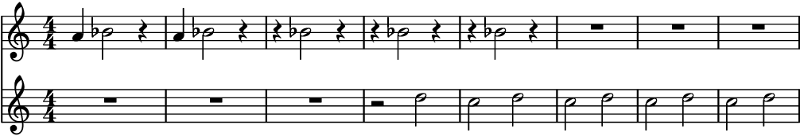- Example:
To disable time signatures altogether, initialise this class with the keyword argument
omit_time_signaturesset toTrue(default isFalse), or use theomit_time_signaturesproperty after initialisation.>>> container_out = abjad.Container(r"fs'4 g'2 bf'4") >>> container_in = abjad.Container(r"\times 4/5 {cs''4 d''1}") >>> adrifter = auxjad.Drifter(container_out, ... container_in, ... omit_time_signatures=True, ... ) >>> staff_a, staff_b = adrifter.output_n(3) >>> score = abjad.Score([staff_a, staff_b]) >>> abjad.f(score) \new Score << \new Staff { fs'4 g'2 bf'4 fs'4 g'2 r4 fs'4 g'2 r4 } \new Staff { R1 R1 \times 4/5 { cs''4 r1 } } >>
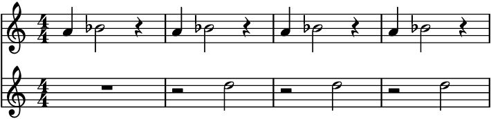
Tip
All methods that return an
abjad.Selectionwill add an initial time signature to it. Theoutput_n()andoutput_all()methods automatically remove repeated time signatures. When joining selections output by multiple method calls, useauxjad.remove_repeated_time_signatures()on the whole container after fusing the selections to remove any unecessary time signature changes.- Example:
This function uses the default logical tie splitting algorithm from abjad’s
rewrite_meter(). It can be disabled with the propertydisable_rewrite_meter.>>> container_out = abjad.Container(r"c'8 d'4 e'8 ~ e'2") >>> container_in = abjad.Container(r"c'2 d'2") >>> adrifter = auxjad.Drifter(container_out, ... container_in, ... disable_rewrite_meter=True, ... ) >>> staff_a, staff_b = adrifter.output_n(3) >>> score = abjad.Score([staff_a, staff_b]) >>> abjad.f(score) \new Score << \new Staff { \time 4/4 c'8 d'4 e'8 ~ e'2 r8 d'4 e'8 ~ e'2 r8 d'4 e'8 ~ e'2 } \new Staff { \time 4/4 R1 R1 r2 d'2 } >>
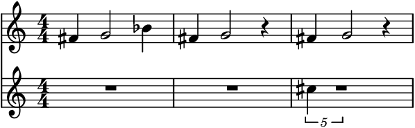Arguments available for tweaking the output of abjad’s
rewrite_meter()areboundary_depth,maximum_dot_countandrewrite_tuplets, which work exactly as the identically named arguments ofrewrite_meter().- Example:
Containers can be switched after initialisation. This will reset the process.
>>> container_out = abjad.Container( ... r"\time 3/4 e2 \times 2/3 {fs8 gs4}") >>> container_in = abjad.Container(r"\time 3/4 c'8 d' e' f' g' a'") >>> adrifter = auxjad.Drifter(container_out, container_in) >>> adrifter.contents_out = abjad.Container(r"\time 3/4 a4. bf4.") >>> print(adrifter) { %%% \time 3/4 %%% a4. bf4. } { %%% \time 3/4 %%% c'8 d'8 e'8 f'8 g'8 a'8 }
Warning
Do note that elements that span multiple notes (such as hairpins, ottava indicators, manual beams, etc.) can become problematic when notes containing them are split into two. Whenever possible, it is always better to attach those to the music after the phasing process is concluded.
- Example:
This class can handle time signature changes.
>>> container_out = abjad.Container( ... r"\time 3/4 a'4 bf'2 ~ \time 2/4 bf'4 f'4") >>> container_in = abjad.Container( ... r"\time 3/4 r16 cs''4.. e''4 \time 2/4 d''2") >>> adrifter = auxjad.Drifter(container_out, container_in) >>> staff_a, staff_b = adrifter.output_n(3) >>> score = abjad.Score([staff_a, staff_b]) >>> abjad.f(score) \new Score << \new Staff { \time 3/4 a'4 bf'2 ~ \time 2/4 bf'4 f'4 \time 3/4 a'4 bf'2 ~ \time 2/4 bf'4 f'4 \time 3/4 a'4 bf'2 ~ \time 2/4 bf'4 r4 } \new Staff { \time 3/4 R1 * 3/4 \time 2/4 R1 * 1/2 \time 3/4 r16 cs''4.. r4 \time 2/4 R1 * 1/2 \time 3/4 r16 cs''4.. r4 \time 2/4 R1 * 1/2 } >>
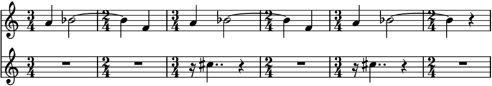- Example:
This class can also handle dynamics, articulations, chords, and tuplets. Hairpins might need manual tweaking if the leaf under which they terminate is removed.
>>> container_out = abjad.Container(r"<c' e' g'>4.\p e'8--\f ~ e'2") >>> container_in = abjad.Container( ... r"\times 2/3 {f'4-.\pp r4 <d' ef'>4->\f ~ } <d' ef'>2") >>> adrifter = auxjad.Drifter(container_out, ... container_in, ... fade_in_first=True, ... fade_out_last=True, ... ) >>> staff_a, staff_b = adrifter.output_all() >>> score = abjad.Score([staff_a, staff_b]) >>> abjad.f(score) \new Score << \new Staff { \time 4/4 <c' e' g'>4. \p e'8 \f - \tenuto ~ e'2 <c' e' g'>4. \p e'8 \f - \tenuto ~ e'2 r4. e'8 \f - \tenuto ~ e'2 r4. e'8 \f - \tenuto ~ e'2 R1 } \new Staff { \time 4/4 R1 \times 2/3 { f'4 \pp - \staccato r2 } r2 \times 2/3 { f'4 \pp - \staccato r2 } r2 \times 2/3 { f'4 \pp - \staccato r4 <d' ef'>4 \f - \accent ~ } <d' ef'>2 \times 2/3 { f'4 \pp - \staccato r4 <d' ef'>4 \f - \accent ~ } <d' ef'>2 } >>
Tip
The functions
auxjad.remove_repeated_dynamics()andauxjad.reposition_clefs()can be used to clean the output and remove repeated dynamics and unnecessary clef changes.Warning
Do note that elements that span multiple notes (such as hairpins, ottava indicators, manual beams, etc.) can become problematic when notes containing them are split into two. As a rule of thumb, it is always better to attach those to the music after the drifting process has ended.
- Example:
It is possible to use this class with containers of different lengths and time signatures, although this feature is not fully implemented and should be considered experimental. LilyPond must be set up to allow different simultaneous time signatures, and
auxjad.sync_containers()can be used to add rests to the end of the shorter staff.>>> container_out = abjad.Container(r"\time 3/4 c'4 d'4 e'4") >>> container_in = abjad.Container(r"\time 4/4 g'2 a'2") >>> adrifter = auxjad.Drifter(container_out, ... container_in, ... fade_in_first=True, ... fade_out_last=True, ... weighted_duration=True, ... ) >>> staff_a, staff_b = adrifter.output_all() >>> auxjad.sync_containers(staff_a, staff_b) >>> score = abjad.Score([staff_a, staff_b]) >>> lilypond_file = abjad.LilyPondFile.new() >>> score_block = abjad.Block(name='score') >>> layout_block = abjad.Block(name='layout') >>> score_block.items.append(score) >>> score_block.items.append(layout_block) >>> lilypond_file.items.append(score_block) >>> layout_block.items.append( ... r'''\context { ... \Score ... \remove "Timing_translator" ... \remove "Default_bar_line_engraver" ... } ... \context { ... \Staff ... \consists "Timing_translator" ... \consists "Default_bar_line_engraver" ... }''') >>> abjad.f(score) \version "2.19.82" %! abjad.LilyPondFile._get_format_pieces() \language "english" %! abjad.LilyPondFile._get_format_pieces() \header { %! abjad.LilyPondFile._get_formatted_blocks() tagline = ##f } %! abjad.LilyPondFile._get_formatted_blocks() \layout {} \paper {} \score { %! abjad.LilyPondFile._get_formatted_blocks() \new Score << \new Staff { \time 3/4 c'4 d'4 e'4 c'4 d'4 e'4 c'4 r4 e'4 c'4 r2 c'4 r2 R1 * 3/4 R1 * 3/4 R1 * 3/4 } \new Staff { \time 4/4 R1 r2 a'2 r2 a'2 r2 a'2 g'2 a'2 g'2 a'2 } >> \layout { \context { \Score \remove "Timing_translator" \remove "Default_bar_line_engraver" } \context { \Staff \consists "Timing_translator" \consists "Default_bar_line_engraver" } } } %! abjad.LilyPondFile._get_formatted_blocks()
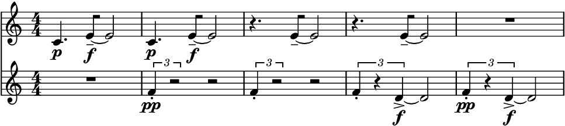
Methods
__init__(contents_out, contents_in, *[, …])Initialises self.
output_all()Goes through the whole fading process and outputs a single
abjad.Selection.output_n(n)Goes through
niterations of the fading process and outputs a singleabjad.Selection.reset()Resets to the initial state.
Attributes
boundary_depthSets the argument
boundary_depthof abjad’srewrite_meter().contents_inThe
abjad.Containerto be faded in.contents_outThe
abjad.Containerto be faded out.current_windowRead-only property, returns the result of the last operation as a tuple of
abjad.Staff.disable_rewrite_meterWhen
True, the durations of the notes in the output will not be rewritten by therewrite_metermutation.fade_in_firstWhen
True, the first note of the fade in content will be added before a note from the fade out content is removed.fade_out_lastWhen
True, the last note of the fade out content will be removed only after the full fade in content is added.final_repetitionsThe number of times the final containers are repeated after the drifting process ends.
final_repetitions_counterRead-only property, returns the counter of
final_repetitions.initial_repetitionsThe number of times the initial containers are repeated before the drifting process starts.
initial_repetitions_counterRead-only property, returns the counter of
initial_repetitions.maximum_dot_countSets the argument
maximum_dot_countof abjad’srewrite_meter().omit_time_signaturesWhen
True, all time signatures will be omitted from the output.repetition_chanceThe chance of the head not moving, thus repeating the output.
rewrite_tupletsSets the argument
rewrite_tupletsof abjad’srewrite_meter().use_multimeasure_restsWhen
True, multimeasure rests will be used for silent measures.weighted_durationWeights the choice of fader according to its number of logical ties and total duration.